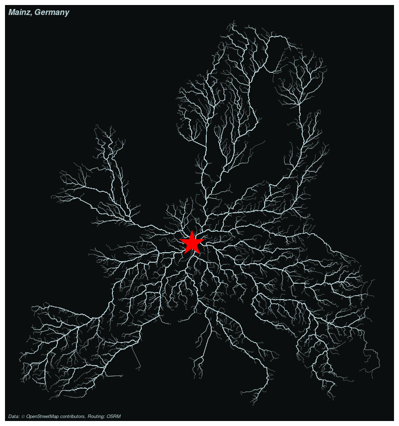

# remotes::install_github("rCarto/cobweb")
library(cobweb)
cobweb(city = "Mainz, Germany",
nroad = 3000, ncl = 8,
url = "http://0.0.0.0:5000/")How to Build a European-Wide OSRM Server on a Desktop Computer
osrm
Open Source Routing Machine, or OSRM (Luxen and Vetter 2011), is a routing software based on OpenStreetMap (OSM) data. OSRM can be used to find the fastest route between points, to compute time or distance matrices between set of points or to solve the traveling salesman problem.
As maintainer of the osrm R package (Giraud 2022) I often find myself advising users to use their own instance of OSRM to enable them to send a large number of requests and not overload the demo server. In these cases I simply point to the Docker installation instructions in the project’s README file. These instructions may not be detailed enough to build an OSRM instance on a large area.
OSRM needs a lot of RAM to prepare the road network for requests and using only these instructions will probably result in message like this one:
[warn] Please provide more memory or consider using a larger swapfileThis problem is addressed in this issue on the OSRM GitHub repository. The suggested solution is to rent a temporary server. This is not the only solution, a modern computer with a rather classical hardware configuration can actually do the job.
In this post I’ll explain how to build a European-wide OSRM instance on a desktop computer. These explanations are, to a certain extent, also valid when using a remote server.
Note
This post implies some Linux/CLI/Docker knowledge from its reader.
Hardware
I use my personal laptop computer which has a 1 TB SSD hard drive and the following config:
OS: Debian GNU/Linux 12 (bookworm) x86_64 Host: HP EliteBook 840 G8 Notebook PC Kernel: 6.1.0-10-amd64 CPU: 11th Gen Intel i7-1185G7 (8) @ 4.800GHz Memory: 31.04GB
Add some extra memory
The preparation of the OSM network for OSRM is memory intensive and will need more than the already available 32 GB of RAM. The swap memory is used when a program consume the totality of the available RAM memory. Consequently we need to extend the swap memory of our computer. I use a very large file (a 200 GB file named “swap.swap”) to be sure to not exceed the limit.
Note that this step is not necessary when working on smaller areas.
# preallocate space to a file named swap.swap
sudo fallocate -l 200G swap.swap
# change file access permissions
sudo chmod 600 swap.swap
# set the file as a swap area
sudo mkswap swap.swap
# start swapping to the file
sudo swapon swap.swap
# modify the swapiness
sudo sysctl vm.swappiness=20Download the OSM road network
The Geofabrik website provides OSM database extracts that can be used as input for OSRM. In our case we have downloaded the osm.pbf file for Europe (27.1 GB).
Build the dataset for OSRM
The europe-latest.osm.pbf file needs to be processed to be used by OSRM. This is done in three steps. You can change the transport mode in the first step, here we use the car profile.
- Extract (~5h30)
docker run --rm -t -v "${PWD}:/data" ghcr.io/project-osrm/osrm-backend:v5.27.1 osrm-extract -p /opt/car.lua /data/europe-latest.osm.pbf- Partition (~1h20)
docker run --rm -t -v "${PWD}:/data" ghcr.io/project-osrm/osrm-backend:v5.27.1 osrm-partition /data/europe-latest.osrm- Customize (~0h10)
docker run --rm -t -v "${PWD}:/data" ghcr.io/project-osrm/osrm-backend:v5.27.1 osrm-customize /data/europe-latest.osrmNote that you can update the osrm-backend version in these commands, by replacing v5.27.1 by v6.0.0 for example.
Run the instance
This is the command I use to run this freshly built OSRM instance:
docker run -t -i -p 5000:5000 -v "${PWD}:/data" ghcr.io/project-osrm/osrm-backend:v5.27.1 osrm-routed --algorithm mld --max-table-size 50000000 /data/europe-latest.osrmOther experiments
A laptop with lower capacities:
OS: Debian GNU/Linux 12 (bookworm) x86_64 Host: HP EliteBook Folio 1040 G3 Kernel: 6.1.0-12-amd64 CPU: Intel i7-6600U (4) @ 3.400GHz Memory: 15.50GB
- Extract ~56h
- Partition ~2h40
- Customize ~1h
A server with higher capacities:
OS: Ubuntu 22.04.3 LTS (Jammy Jellyfish) x86_64 Host: ASUS Kernel: Linux 5.15.0-91-generic CPU: AMD Ryzen 7 7700 8-Core Processor (16) @ 5.388GHz Memory: 62GB
- Extract 1h06
- Partition 0h34
- Customize 0h02
Example of use
This OSRM instance will actually be used in the framework of a European research program (Granular). In this project we’ll need to request a very large number of distances and routes throughout Europe in order to create relevant accessibility indicators for rural areas.
I’ve built a small R package relying on osrm to send queries in a parallel fashion and create “All roads lead to…” maps. The cobweb package is not bulletproof and it is not on CRAN.
Here is a small demo:

References
Giraud, Timothée. 2022. “osrm: Interface Between R and the OpenStreetMap-Based Routing Service OSRM.” Journal of Open Source Software 7 (78): 4574. https://doi.org/10.21105/joss.04574.
Luxen, Dennis, and Christian Vetter. 2011. “Real-Time Routing with OpenStreetMap Data.” In Proceedings of the 19th ACM SIGSPATIAL International Conference on Advances in Geographic Information Systems, 513–16. GIS ’11. New York, NY, USA: ACM. https://doi.org/10.1145/2093973.2094062.